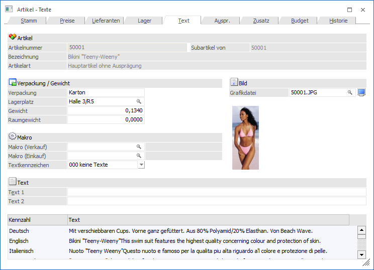
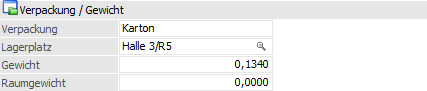
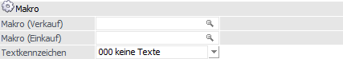
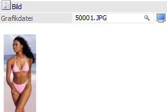
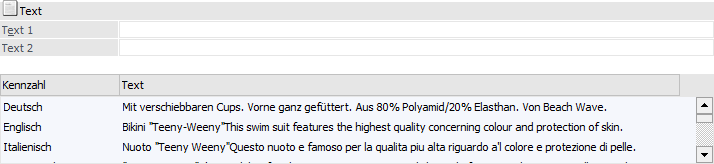
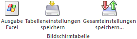

In dem Register "Text" können u.a. die Artikeltexte des Artikels hinterlegt werden.

Folgende Eingabefelder, Einstellungen und Informationen stehen zur Verfügung:
Artikel

Ø Artikelnummer
An dieser Stelle wird die Artikelnummer des ausgewählten Artikels angezeigt.
Ø Subartikel von
Handelt es sich bei dem aktuellen Artikel texttechnisch um einen Subartikel eines anderen Artikels, so wird hier die Artikelnummer des sogenannten Hauptartikels angezeigt und alle folgenden Felder sind für eine Eingabe gesperrt. Handelt es sich nicht um einen Subartikel, so wird an dieser Stelle die Artikelnummer des aktuellen Artikels dargestellt.
Ø Bezeichnung
Hier wird die Bezeichnung des aktuell gewählten Artikels dargestellt.
Ø Artikelart
An dieser Stelle wird die Art des Artikels ausgewiesen, d.h. ob es sich z.B. um einen Artikel mit oder ohne Ausprägungen handelt.
Ø Lagerführung
Handelt es sich bei dem Artikel um einen Artikel, welcher in 2 Mengen geführt wird, so wird neben der Artikelart die statische Information "Lagerführung in 2 Mengen" angezeigt.
Verpackung / Gewicht

Ø Verpackung
An dieser Stelle kann eine Umverpackung angeben werden, wobei diese Verpackung in WinLine keinerlei Rechenfunktion bieten.
Hinweis
Ein Ansprechen dieses Felds in den WinLine FAKT Formeln ist möglich.
Ø Lagerplatz
Hier kann dem Artikel ein Lagerplatz zugeordnet werden (max. 20 Stellen). Durch Anwählen der F9-Taste kann nach bereits bestehenden Lagerorten gesucht werden (nähere Informationen entnehmen Sie bitte dem Kapitel Lagerplatz - Matchcode). Ist ein Lagerort noch nicht vorhanden, wird er durch das Eintragen in das Feld "Lagerplatz" automatisch angelegt.
Hinweis
Sobald ein Lagerplatz in keinem Artikel mehr zugeordnet ist, so wird dieser automatisch gelöscht und steht somit auch im "Lagerplatz - Matchcode" nicht mehr zur Verfügung.
Achtung
Der Lagerplatz dient als reines Selektionskriterium für die Inventur und kann auf sämtlichen Auswertungen mit angedruckt werden. Dieser Platz kann eine zusätzliche Lagerortbeschreibung sein. Wenn die Artikel in mehreren Lagerorten / -plätzen gelagert haben, so kann dieses mittels Ausprägungen oder dem WinLine LAGERMANAGEMENT gelöst werden.
Ø Gewicht
Angabe des Gewichts pro Einheit an.
Achtung
Wenn sich das Modul INTRASTAT im Einsatz befindet, so muss hier das Gewicht in kg/Stück hinterlegt werden.
Ø Raumgewicht
An dieser Stelle kann das Raumgewicht des Artikels angegeben werden (z.B. für Fälle, wo das Volumen im Verhältnis zum Gewicht relevant wird, z.B. bei Sperrgut).
Makro

Ø Makro (Verkauf)
Soll ein Makro (z.B. ein Textbaustein) für den Bereich "Verkauf" (Angebot, Auftrag, Lieferschein, Faktura) mit dem Artikel verknüpft werden, so wird hier der Makronamen eingetragen.
Ein Makro kann ein Textbaustein (enthält reinen Fließtext) oder ein "rechnender Textbaustein" (z.B. ein Setartikel = Verknüpfung von mehreren Artikeln und Textbausteinen) sein.
Hinweis
Die Anlage einer Makro- bzw. Textbausteindefinition erfolgt im Bereich "WinLine FAKT - Stammdaten - Artikelstamm - Makros bzw. Textbausteine". Zusätzlich steht der Makromatchcode über das Lupen-Symbol bzw. die Taste F9 zur Verfügung (nähere Informationen entnehmen Sie bitte dem Kapitel Makro - Matchcode).
Ø Makro (Einkauf)
Soll ein Makro (z.B. ein Textbaustein) für den Bereich "Einkauf" (L.Anfrage, L.Bestellung, L.Lieferschein, L.Faktura) mit dem Artikel verknüpft werden, so wird hier der Makronamen eingetragen.
Ein Makro kann ein Textbaustein (enthält reinen Fließtext) oder ein "rechnender Textbaustein" (z.B. ein Setartikel = Verknüpfung von mehreren Artikeln und Textbausteinen) sein.
Hinweis
Die Anlage einer Makro- bzw. Textbausteindefinition erfolgt im Bereich "WinLine FAKT - Stammdaten - Artikelstamm - Makros bzw. Textbausteine". Zusätzlich steht der Makromatchcode über das Lupen-Symbol bzw. die Taste F9 zur Verfügung (nähere Informationen entnehmen Sie bitte dem Kapitel Makro - Matchcode).
Ø Textkennzeichen
Aus der Auswahlbox kann ein Textkennzeichen hinterlegt werden, welches bei der Belegbearbeitung auch ausgedruckt werden kann.
Hinweis
Die Textkennzeichen werden im Menüpunkt "WinLine FAKT - Stammdaten - Textkennzeichen" definiert (nähere Informationen entnehmen Sie bitte dem Kapitel Textkennzeichen).
Bild

Ø Grafikdatei
Eingabe einer Artikelgrafikdatei in den Formaten:
ü Windows Bitmap (*.BMP,*.DIB)
ü Windows Meta File (*.WMF,*.EMF)
ü Graphics Interchange Format (*.GIF)
ü Tagged Image File Format (*.TIF)
ü Truevision Targa (*.TGA)
ü JPEG File Format (*.JPG)
ü Zsoft Paintbrush (*.PCX)
Um eine Artikelgrafik zuzuweisen, stehen folgende Varianten zur Verfügung:
ü Matchcode im Feld
"Grafikdatei"
Über den Matchcode mit F9 wird das Fenster Grafiken importieren
geöffnet. In diesem werden die Grafiken, welche in der Systemdatenbank
gespeichert wurden, angezeigt. Mit dem Button Suchen kann nach Grafiken
außerhalb der Systemdatenbank gesucht werden.
ü Button "Bildersuche"
Mit Hilfe
dieses Buttons kann ein Bild für den Artikel gesucht, ausgeschnitten und
zugeordnet werden.
ü Anwahl der Grafik im Bereich
"Bild"
Durch Anwahl des aktuellen Bilds kann ein neues Bild zugewiesen
werden. Hierbei steht auch das Ausschneiden zur Verfügung.
Ø Bild anzeigen
Wird im Artikelstamm mit der rechten Maustaste das Kontextmenü aufgerufen und der Punkt "Artikelgrafik" gewählt oder auf den Button "Bild anzeigen" gedrückt, so wird die Artikel-Grafik in einem eigenen Fenster dargestellt.
Bei jeder Neueingabe einer Artikelnummer bzw. bei jedem Wechsel mittels VCR-Button wird das Fenster Artikel-Grafik mit dem gerade aktuellen Artikel upgedated.
Ø Bild
An dieser Stelle wird das Bild des Artikels dargestellt. Ein neues Bild kann über das Feld "Grafikdatei", durch Anwahl des aktuellen Bilds oder mit Hilfe des Buttons "Bildersuche" zugewiesen werden.
Text

Ø Text 1 / Text 2
Mit Hilfe dieser Felder kann der Artikel / das Produkt näher beschrieben werden (max. Länge von jeweils 255 Zeichen).
Hinweis
In den Feldern Text 1 und Text 2 können auch weitere Artikelnummern für den jeweiligen Artikel hinterlegt werden. Nach diesen Feldern kann auch im Alternativen Artikelnummern Matchcode gesucht werden (nähere Informationen entnehmen Sie bitte dem Kapitel "Alternative Artikelnummern").
Ø Artikelnotiz 1 bis 10
Über die Tabelle können bis zu 10 Textblöcke (RTF-Texte) zu dem Artikel definiert werden. Die Definition erfolgt durch Anwahl einer Textzeile (Doppelklick oder Enter-Taste) im Register "Texteingabe".
Hinweis
Die Führungstexte (Kennzahlen) für diese zehn Artikelnotizen werden in den FAKT-Parametern (WinLine START - Parameter - Applikations-Parameter - FAKT-Parameter - Artikel - Allgemein - Einstellung "Führungstexte für Artikelnotizen") definiert.
Beispiel
Eine von vielen denkbaren Anwendungsmöglichkeiten wäre z.B. hier die Artikelbeschreibung in verschiedenen Fremdsprachen einzugeben und je nachdem, welcher Kunde (welche Belegart / welches Formular) den Beleg bekommt, wird automatisch der entsprechende Fremdsprachentext angezogen.
Tabellenbuttons

Ø Ausgabe Excel
Durch Anwahl des Buttons "Ausgabe Excel" wird der Inhalt der Tabelle nach Microsoft Excel übergeben.
Ø Tabelleneinstellungen speichern
Die Spalten einer Tabelle können grundsätzlich an beliebige Positionen verschoben, bzw. in der Breite entsprechend angepasst werden. Durch Anwahl des Buttons "Tabelleneinstellungen speichern" werden die Einstellungen benutzerspezifisch gespeichert und bei dem nächsten Aufruf des Programmpunktes wieder vorgeschlagen.
Ø Gesamteinstellungen speichern
Im Gegensatz zu "Tabelleneinstellungen speichern" können mit "Gesamteinstellungen speichern" mehrere Tabellenaufbauten gespeichert und nach Wunsch geladen werden. Zusätzlich werden Sonderfunktionen der Tabelle (z.B. "Spalte gruppieren") ebenfalls bei der Speicherung bedacht.